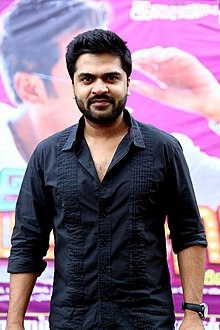

SIMBU
Silambarasan Thesingu Rajendar (born 3 February 1983), nicknamed as Simbu or his initials S.T. R. and known as Little Super Star,
is an Indian actor, filmmaker and musician in Tamil cinema. He is the eldest son of actor and director T. Rajendar.
He began his acting career by playing roles as a child artist in films directed by his father,[1][2] before his first lead role in his father's Kadhal Azhivathillai (2002).